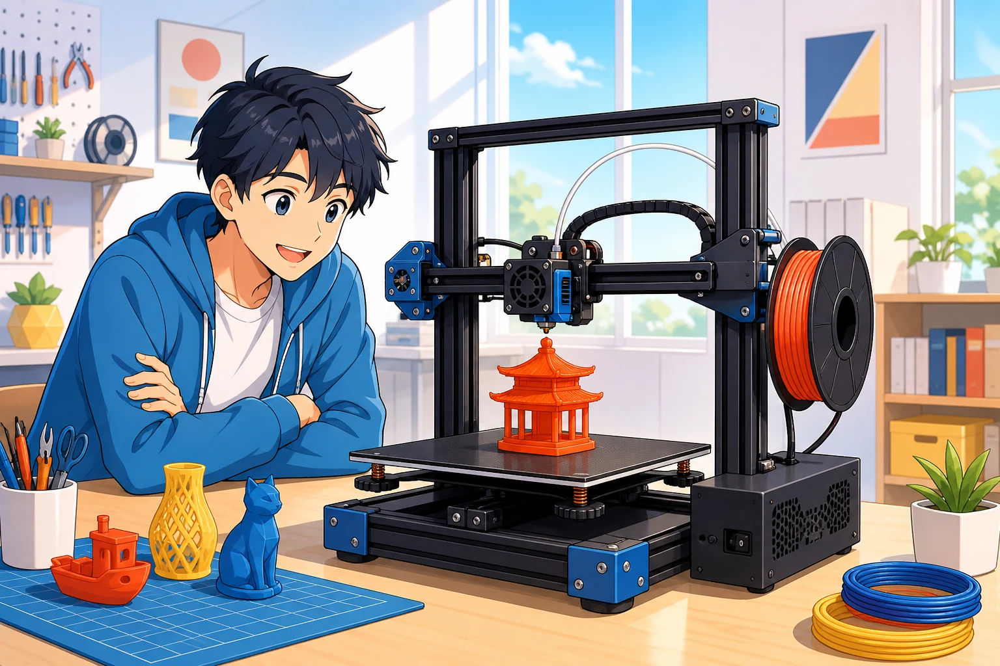

安全操作
先辨認高溫與運動區域，再學會平台、線材、噴嘴與取件的正確順序。
3D PRINTING · FROM ZERO
用繁體中文一步步認識 FDM 3D 印表機，從安全操作、Bambu Studio 切片到 A1 實際列印，建立真正能獨立完成作品的基礎。

ABOUT THIS CLASSROOM
不用先會建模，也不用背下所有參數。每一課只處理一個明確任務，讓你從看懂機器一路走到安全完成作品。
先辨認高溫與運動區域，再學會平台、線材、噴嘴與取件的正確順序。
從匯入模型、選擇機型到逐層預覽，知道送出列印前究竟要檢查什麼。
觀察第一層、理解參數取捨，並依症狀一步步找出失敗原因。
CHOOSE YOUR PATH
先完成 12 堂初階課程，建立安全操作與獨立列印能力；進階內容會在課綱完成後另行開放。
從原理、安全、切片到第一次列印，最後完成維護、排錯與成果挑戰。
查看完整課程預計涵蓋設備校正、材料調校、設計最佳化與系統化實驗。
課綱完成後開放12 BEGINNER COURSES
建議依序學習。完成按鈕會記錄在目前裝置，回到首頁就能繼續上次進度。
先安全完成作品，再慢慢理解為什麼。
看懂切片結果，知道每個設定改變了什麼。
選對材料、解決問題，完成自己的作品。